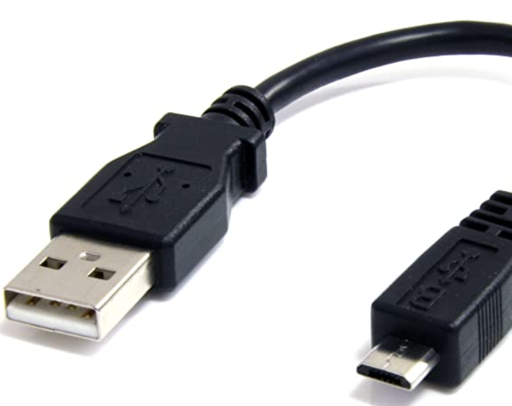

Back
𝐂𝐲𝐛𝐞𝐫𝐑𝐢𝐠
If you have any questions or need help join our discord server and message Rigby#3436
Join our discord server.
NodeMcu binFile
Download bin file
The bin file works for all NodeMcus
NodeMcu flasher
Download ESP8266 Flasher 64bit
Download ESP8266 Flasher 32bit
Requirements
Micro USB Cable - A to Micro B - USB to Micro B
Number 1 | You may already have this cable if you have a Android phone or just have it laying around.
Number 2 | A windows 10 computer. if you don't have a windows 10 computer you can try to find a flasher software for your operating system.
Number 3 | And of course you need a computer.
